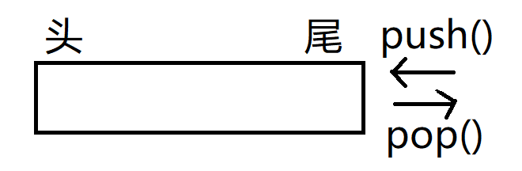
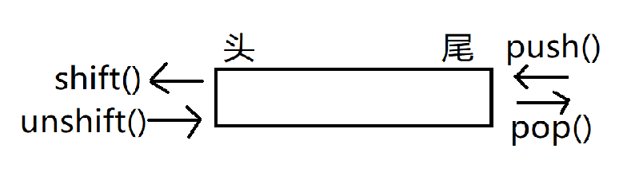

# 语法
# 三种JS方式：
-行内式
<input type="button" value="唐伯虎" onclick="alert('点秋香')">
-内嵌式
<script>
alert('Hello world');
</script>
2
3
-外嵌式
<script src="my.js"></script>
# 输入输出：
-alert() 弹出警示框
-console.log() 浏览器控制台打印输出信息
-prompt("请输入你的年龄") 弹出用户可以输入的输入框
# 数据类型：
-JavaScript是一种弱类型或者说是动态语音
-var age；声明变量是不知道变量的类型的
-var age=10；变量确定类型为数字形
-var age='ten'；变量又动态变成字符串型
typeof()：检测给定变量的数据类型
数字型 Number 最大值:Number.MAX_VALUE 最小值：.MIN_VALUE
isNaN()函数：flase-是数值 / true-不是数值
其中isNan('10') 返回true，原因是回确定该字符串能否转换为数值
数值转换：
-Number()：用于任何数据类型
var num1=Number("Hello"); //NaN
var num2=Number(""); //0
var num3=Number("0000011"); //11
var num4=Number("true); //1
var num5=Number("12bb"); //12
2
3
4
5
-parseInt()：用于字符串
-parseFloat()：用于字符串
var num1=parseInt("22.5"); //22
var num2=parseFloat("22.5"); //22.5
var num3=parseInt("22.5"); //22.5
var num4=parseInt("10",2); //2
var num5=parseInt("AF",16); //175
2
3
4
5
- 字符串型 String
-转义字符：\n 换行
\ \ \
\ ' '
-字符串长度：字符串.length (其中转义字符会自动表示解析为一个字符)
数值转换
-toString()：unll undefined不存在这个方法
var age=11；
age.toString(); //"11"
var age=10
age.toString(2); //"1010"
2
3
4
5
-String()：任何类型都可以使用
其中null—"null" / undefined—"undefined"
Undefined
-var声明变量但为对其初始化
-未声明与未初始化不同，但两者通过typeof都返回undefined值
Null
-Null类型的特殊值为null，逻辑角度上表示一个空指针
-typeof(null)返回"object"
-null == undefined //true
Boolean
-仅有true/false两个值
类型转换：
-Boolean()函数
true false
String：非空字符串 ""
Number：非零数字值 0和NaN
Object：任何对象 null
Undefined：N/A undefined
2
3
4
5
# 操作符
一元操作符：
- 递增++、递减--
- 一元+：放在数值前面，对数值不会产生任何影响，作用等同于Number()
- 减：主要用于表示负数
位操作符：
- 按位非(NOT)：以~表示，返回数值的反码，以二进制 本质：操作数的负数-1
- 按位与(AND)：以&表示，将两个数值的每一位对齐，再进行”与“操作
- 按位或(OR)：以|表示，将两个数值的每一位对齐，再进行”或“操作
- 按位异或(XOR)：以^表示，将两个数值的每一位对齐，再进行”异或“操作
- 左移：以<<表示，数值的所有位向左移
- 有符号右移：以>>表示，数值的所有位向右移，并保留符号
- 无符号右移：以>>>表示，数值的所有位向右移，不保留符号
布尔操作符：
- 逻辑非：以！表示，不管是什么数据类型，这个操作符都返回一个布尔值
!对象 //false
!空字符串 //true
!非空字符串 //false
!0 //true
!非0 //false
!null //true
!NaN //true
!undefined //true
2
3
4
5
6
7
8
- 逻辑与：以&&表示，两个操作数都是布尔值时与以往相同，若有其中不为布尔值
对象&&未知 //第一个对象
未知&&对象 //第一个为true时，返回第二个对象
对象&&对象 //返回第二个操作数
null&&未知 //null
NaN&&未知 //NaN
undefin&&未知 //undefined
2
3
4
5
6
- 逻辑或：以||表示 ,常用该符号来进行赋值 var myObject=preObject || backObject; 可以提供后备值，若preObject为null则看backObject
对象&&未知 //第一个对象
false&&未知 //返回第二个未知操作数
对象&&对象 //返回第一个操作数
null&&null //null
NaN&&NaN //NaN
undefined&&undefined //undefined
2
3
4
5
6
乘性操作符：
- **乘法：**以*表示
NaN*未知 //NaN
Infinity*0 //NaN
2
- **除法：**以/表示
有一个操作数是NaN //NaN
Infinity/Infinity //NaN
0/0 //NaN
非0数值/0 //Infinity(-Infinity)
2
3
4
- **求模：**以%表示
无穷大%有限大 //NaN
有限大%0 //NaN
Infinity%Infinity //NaN
有限大%无穷大 //被除数
0%未知 //0
2
3
4
5
**关系操作符：**以> < >= <=为主
- 两个字符串相比，则比较两个字符串对应的字符编码值
- 一个操作是数为数值，则另一个操作数转化为数值
- 任何操作数与NaN相比，结果都是false
相等操作符：
- 相等与不相等(== !=) "先转换再比较，转化成数值"
null==underfined //true
"NaN"==NaN //false
NaN==5 //false
NaN==NaN //false
undefined==0 //false
null==0 //false
2
3
4
5
6
- 全等与不全等(=== !==) "未经转换就相等"
条件操作符：
variable = boolean_expression ? true_value : false_value
条件 ？ 赋值1 ：赋值2
# 语句
for-in：一种精准的迭代语句，可以用来枚举对象的属性
for(property in expression) statement
var person={fname = "John",Lname="Doe",age=25};
var text="";
var x;
for(x in person){
text+=person[x]+"";
}
// Jone Doe 25
2
3
4
5
6
7
**lable：**可以再代码中添加标签，以便将来使用
语法：lable：statement
常常与break continue语句一起引用
var num=0;
outermost:
for(var i=0;i<10;i++){
for(var j=0;j<10;j++){
if(i==5 && j==5){
break outermost;
}
num++;
}
}
alert(num); //55
2
3
4
5
6
7
8
9
10
11
with:
-将代码的作用域设置到一个特定的对象中，目的是简化多次编写同一个对象的工作。
-语法： with(expression) statement；
var qs=location.serch.substrig(1);
var hostName=location.hostname;
var url=location.href;
with(location){
var qs=serch.substring(1);
var hostName=hostname;
var url=location.href;
}
//在with代码块中，每个变量先被认为是局部变量，若找不到定义，就查询是否是location对象的同名属性
2
3
4
5
6
7
8
9
10
# arguments对象
-Js函数不介意传递来多少个参数，也不介意传递进来的参数是什么数据类型。
-Js中的参数在内部是用一个数组来表示的，函数接收到的始终是这个数组。
-在函数体内可以通过arguments对象来访问这个参数数组
function sayHi(){
alert("Hello"+arguments[0]+","+arguments[1]);
}
arguments.lentgh //可以货值有多少个参数传递给了函数
function doAdd(){
if(arguments.length==1){
alert(arguments[0]+10);
}else if(arguments.length==2){
alert(arguments[0]+arguments[1]);
}
}
doAdd(10); //20
doAdd(30,20) //50
2
3
4
5
6
7
8
9
10
11
12
13
14
# 检测类型
instanceof
-想知道它是什么类型的对象，返回值为true false
-用instanceof检测基本类型，始终会返回false
-语法：result = variable instanceof constructor
alert(person instanceof Object); //变量person是Object吗？
alert(color instanceof Array); //变量colors是Array吗？
alert(pattern instanceof RegExp); //变量pattern是RegExp吗？
2
3
# 引用类型
# Object类
# 三种构造方式：
var person = new Object();
var person ={
name："Nicholas", age:29
};
var person = {} person.name = "Nicholas"; person.age=29;
# typeof操作符：
可以用其来检测对象属性是否存在
if(typeof args.age == "number"){
output += "Age:" + args.age + "\n";
}
2
3
# 访问属性的方式：
- person.name
- person["name"]
方括号的优点是可以通过变量来访问属性，或者属性名中包含非字母
# Array类
说明： Js的数组每一项可以保存任何类型的数据，并且数组的大小是动态调整的。
# 创建数组：
- var colors = new Array(); var colors = new Array(20); var colors = new Array("red","blue","green");
- var colors = ["red","blue","green"]; var colors = [];
数组索引： colors[0]
数组长度： colors.length 该属性还可以方便的在数组末尾添加新项
var colors = ["red","blue","green"];
colors[colors.length] = "black";
colors[colors.length] = "brown";
2
3
检测数组： Array.isArray()方法
# 转换方法：
var colors = ["red","blue","green"];
alert(colors.toString()); //red,blue,green
alert(colors.valueOf()); //red,blue,green
alert(colors); //red,blue,green
alert(colors.toLocaleString()); //red,blue,green
alert(colors.join("||")); //red||blue||green
2
3
4
5
6
# 栈方法：
# 队列方法：
# 重排序方法：
-reverse():反转数组项的顺序
-sort():对数组每一项进行字符串的比较，但常常在数值比较中出错，所以可以传入一个比较函数。
function compare(value1,value2){
if(value1<value2){
return -1
}else if(value1>value2){
return 1
}else{
return 0
}
}
var values=[0,1,5,10,15];
values.sort(compare);
alert(values); //0,1,5,10,15
values.sort();
alert(values); //0,1,10,15,5
2
3
4
5
6
7
8
9
10
11
12
13
14
15
16
# 操作方法：
-concat()：基于当前数组中所有项创建一个新数组
var colors = ["red","blue","yellow"];
var colors2 = colors.concat("green",["black","brown"]);
alert(color2); //red,blue,yellow,green,black,brown
2
3
4
-slice(起始位置，结束位置)：能基于当前数组中的一个或者多个项创建一个新数组
说明：从其实位置开始取，不包含结束位置
var colors = ["red","blue","yellow","green","black"];
var colors2 = colors.slice(1,4);
alert(colors); //blue,yellow,green
2
3
4
-solice(起始位置，要删除的项数，要插入的项)：
删除：splice(0,2); //删除数组中的前两项
插入：splice(2,0,"red","green"); //在位置2处插入red，green
替换：splice(2，2，"red","green") //删除两项并添加两项
2
3
# 位置方法：
-indexOf()：接受两个参数，要查找的项和(可选)查找起点位置的索引，没找到返回-1
-lasrIndexOf():接受两个参数，要查找的项和(可选)查找起点位置的索引，没找到返回-1
# 迭代方法：
三个参数：item index array -every()：若对每一项都返回true，则返回true。 -some()：对任一项返回true，则返回true -filter():返回该函数会返回true的项组成的数组 -map()：返回每次函数调用的结果组成的数组 -forEach():运行每一项，没有返回值
var numbers = [ 1,2,3,4,5,4,3,2,1];
var everyResult = numbers.every(function(item , index , array){
return (item>2)
}) //false
同理若numbers.some //true
var filiterResult = numbers.filter(function(item , index , array){
return (item>2)
}) //3,4,5,4,3
var mapResult = numbers.map(function(item , index , array){
return item*2
}) //2,4,6,8,10,8,6,4,2
numbers.forEach(function(item , index , array){
//某项操作
})
2
3
4
5
6
7
8
9
10
11
12
13
14
15
16
17
18
# 归并方法：
-reduce()； -reduceRight()；
这两个函数都接收四个参数：前一个值、当前值、项的索引、数组对象。函数的返回值都会作为第一个参数自动传给下一项。
var values = [1,2,3,4,5];
var sum = values.reduce(fuction(prev , cur , index , array){
return prev+cur;
})
2
3
4
# Date类
var now = new Date()—不传递参数的情况下，自动获取当前日期和时间。
var someDate = new Date("3/23/2021")—得到给定日期对象
Date.now(): 返回调用这个方法时的时间和时间毫秒数
+new Date()：也能跟上面一样达到同样的目的
var start = Date.now(); //var start = +new Date();
doSomething();
var stop = Date.now()
result= stop - start
2
3
4
5
6
7
# RegExp类
# 创建RegExp类：
通过RegExp类型来支持正则表达式
var expression = / pattern / flags;
其中pattern可以时任何简单或复杂的正则表达式
而flags是用以标明表达式的行为
g：全局模式，将应用于所有字符串，而非发现第一个匹配项时立即停止
i：表示不区分大小写
m：表示多行模式，会继续查找下一行中是否存在与模式匹配的项
2
3
var pattern1 = /at/g; //匹配字符串中所有"at"的实例
var pattern2 = /[bc]at/i //匹配第一个”bat”或"cat",不区分大小写
var pattern3 = /.at/gi //匹配所有以"at"结尾的三个字符的组合，不区分大小写
//注意的是，使用的所有元字符都需要转义
var pattern4 = /\[bc\]at/i //匹配第一个"[bc]at"，不区分大小写
2
3
4
5
6
7
可以通过构造函数来创建：
var expression = new RegExp("[bc]at" , "i")
这里的元字符都必须双重转义，例如 /\ .at/ 等同于 "\ \ .at"
# RegExp实例方法：
-exec()：该方法是专门为捕获组而设计的，该方法在设置全局模式下每次也只返回一个匹配项，每次调用都会在字符串中继续查找新匹配项。 -test()：他接受一个字符串参数，只用于测试是否匹配，参数匹配下返回true；反之...
var text = "mom and dad and baby"
var pattern = /mom( and dad( and baby)?)?/gi;
var matches = pattern.exec(text);
alert(matches.index); //0
alert(matches.input); //"mom and dad and baby"
alert(matches[0]); //"mom and dad and baby"
alert(matches[1]); //" and dad and baby"
alert(matches[2]); //" and baby"
var text = "000-00-0000";
var pattern = /\d{3}-\d{2}-\d{4}/;
if (pattern.test(text)){
alert("The pattern was matched.")
}
2
3
4
5
6
7
8
9
10
11
12
13
14
15
16
# RegExp构造函数属性：
长属性名 短属性名 说明
input $_ 最近一次要匹配的字符串
lastMatch $& 最近一次匹配项
lastParen $+ 最近一次匹配的捕获组
leftContext 匹配字符串之前的文本
rightContext
multiline $* 是否所有表达式都使用多行模式
var text = "this has been a short summer";
var pattern = /(.)hort/g;
if (pattern.test(text)){
alert(RegExp.input); //this has been a short summer
alert(RegExp.leftContext); //this has been a
alert(RegExp.rightContext); //summer
alert(RegExp.lastMatch); //short
alert(RegExp.lastParen); //s
alert(RegExp.multiline); //false
}
2
3
4
5
6
7
8
9
10
11
12
13
14
15
16
17
18
19
# Function类
function sum(num1 , num2){
return num1 + num2;
}
2
3
函数名实际上是一个指向函数对象的指针，不会与某个函数绑定。
因此JavaScript里面的函数是没有重载的
# 函数作值:
将一个函数作为参数传递给另一个函数，并以函数为结果返回
function callSomeFunction(someFunction, someArgument){
return someFunction(someArgument);
}
function createComparisonFunction(propertyName){
return function(object1,object2){
var value1 = object1[propertyName];
var value2 = object2[propertyName];
if(value1 < value2){
return -1;
}else if(value1 > value2){
return 1;
}else{
return 0;
}
}
}
var data = [{name:"Zachary",age:28},{name:"Nicholas",age:29}];
data.sort(createComparisonFunction("name"));
alert(data[0].name); //Nicholas
data.sort(createComparisonFunction("age"));
alert(data[0].name); //Zachary
2
3
4
5
6
7
8
9
10
11
12
13
14
15
16
17
18
19
20
21
22
23
24
# 函数内部属性：
-arguments
-this
-callee 该属性是一个指针，指向拥有整个arguments对象的函数，可以接触与函数名的耦合 通常使用arguments.callee
function factorial(num){
if(num<=1){return 1;}
else {return num*factorial(num-1);}
}
function factorial(num){
if(num<=1){return 1;}
else {return num*arguments.callee(num-1);}
}
2
3
4
5
6
7
8
9
-caller 这个属性保存着调用当前函数的函数的引用
# 函数的属性和方法：
-length：表示函数希望接收的命名参数的个数
-prototype：之后详细介绍
-apply() 与 call():实际上等于设置函数体内this对象的值 真正的作用是扩充函数的运行的作用域
windows.color="red";
var o ={color:"blue"};
function sayColor(){
alert(this.color);
}
sayColor(); //red
sayColor.call(this) //red
sayColor.call(windows) //red
sayColor.call(o) //blue
2
3
4
5
6
7
8
9
10
11
-bind()：创建一个函数的实例，其this值会被绑定到传给bind()函数的值
windows.color="red";
var o ={color:"blue"};
function sayColor(){
alert(this.color);
}
var objectSayColor = sayColor.bind(o);
objectSayColor(); //blue
2
3
4
5
6
7
8
9
# 基本包装类型
Boolean对象：基本不使用
Number对象：同样不建议使用
# String对象：
构造函数
ar stringObject = new String("hello world");
stringObject.length //11
字符方法
charAt()：以单字符形式返回给定位置的那个字符 charCodeAt():返回字符编码 var stringValue = "Hello world"; alert(stringValue.charAt(1)); //"e" alert(stringValue.charCodeAt(1)); //"101" alert(stringValue[1]); //"e"1
2
3
4
5
6
7字符串操作方法
concat()：用于拼接字符串 slice() substr() substring():这三个方法都会返回被操作字符的一个子字符串1
2
3
4字符串位置方法
indexOf(字符，开始位置向后找) lastIndexOf(字符，开始位置向前找)1
2清除空格
trim()1转换大小写
toLowerCase() toLocaleLowerCase() toUpperCase() toLocaleUpperCase()1
2
3
4匹配方法
match(正则表达式/RegExp对象):与RegExo的exec()方法相同 search(参数同上)：返回字符串中第一个匹配的索引，若没找到匹配项返回-1 replace(RegExp对象/字符串，字符串/函数) var text = "cat,bat,sat,fat" var result = text.replace("at","ond"); alert(result); //cond,bat,sat,fat var result = text.replace("/at/g","ond"); alert(result); //cond,bond,sond,fond split(RegExp对象/字符串，数组大小)：分割字符串并放在数组中 var colorText = "red,blue,green,yellow"; var color1 = colorText.split(","); //["red","blue","green","yellow"] var color1 = colorText.split(",",2); //["red","blue"]1
2
3
4
5
6
7
8
9
10
11
12
13
14
15字符串比较
localeCompare()方法，排在参数后面返回1，排在参数前面返回-1，相等返回0 var stringValue = "yellow"; alert(stringValue.localeCompare("brick")); //1 alert(stringValue.localeCompare("yellow")); //0 alert(stringValue.localeCompare("zoo")); //-1 通常使用方法如下： function determineOrder(value){ var result = stringValue.localeCompare(value); if(result < 0){alert("The string yellow comes before the string "+value +".")} ......同理 } 这种结构可以确保自己的代码在任何实现中都可以正确的运行1
2
3
4
5
6
7
8
9
10
11
12
13
14
15
# 单体内置对象
# Global对象
URI编码方法
对URI进行编码，以便发送给浏览器 encodeURI() encodeURIComponent() 对上面进行编码后的URI进行解码 decodeURI() decodeURIComponent()1
2
3
4
5
6eval()方法
完整的解析器，接收一个字符串参数并转化成方法
eval("alert('hi')"); 作用等价于 alert('hi');1
2
3因此作为用户输入时，使用要谨慎避免代码注入
# Math对象
属性
Math.E Math.LN10 Math.LN2 Math.LOG10E Math.PI Math.SQRT21
2
3
4
5
6最大最小值方法
var max = Math.max(3,54,32,16); //54 var min = Math.min(3,54,32,16); //31
2舍入方法
Math.ceil()：向上舍入 25.9-26 Math.floor()：向下舍入 25.9-25 Math.round()：四舍五入 25.5-261
2
3随机数
Math.random()：随机产生[0,1)的数 使用方法： 生成[x,y]的整数 n=y-x+1 rand= Math.floor(Math.random()*n+y);1
2
3
4
5
6